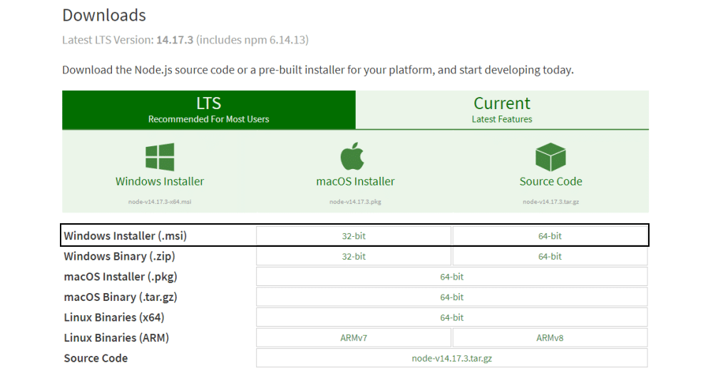
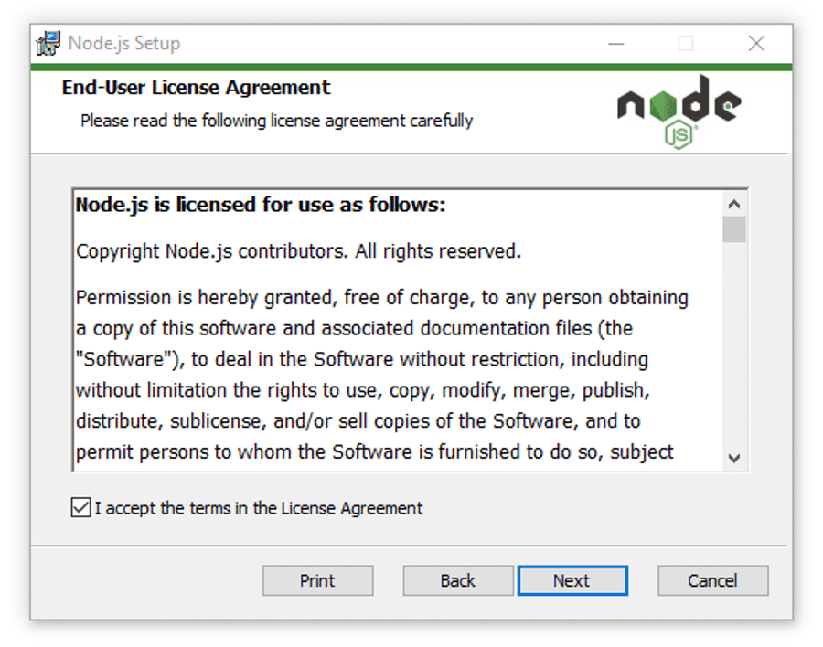
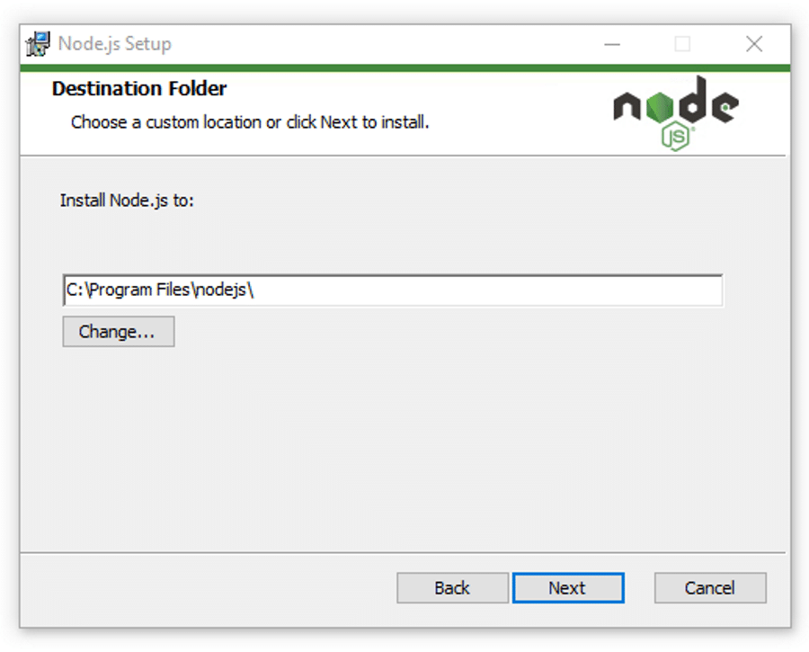
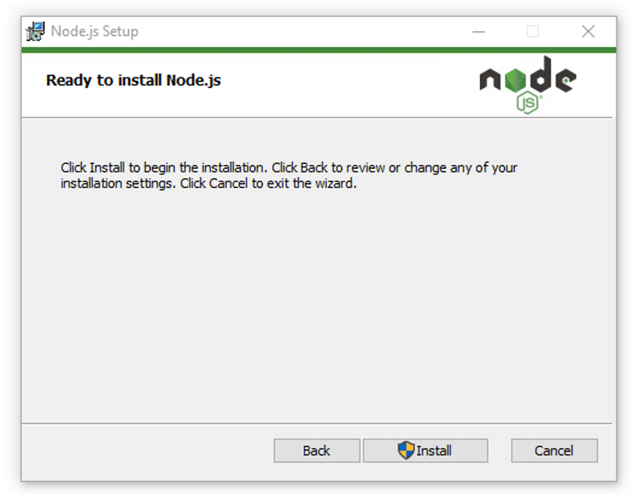

¿Qué es Node.js?
- Node.js es un entorno de ejecución de código abierto para el lenguaje JavaScript que modifica las características de JavaScript y mejora su funcionalidad. Como resultado, se puede utilizar JavaScript para el desarrollo de frontend y backend, lo que permite el desarrollo full-stack únicamente con JavaScript.
Pasos de instalacion de Node.js
paso 1- Descargar el Instalador de Windows

paso 2- Comenzar el Proceso de Instalación

paso 3- A continuación, selecciona el destino donde quieres instalar Node.js

paso 4- Ejecutar la Instalación de Node.js en Windows

paso5- Verificar la Instalación de Node.js
- Para verificar la instalación y confirmar si se ha instalado la versión correcta, abre la línea de comandos de tu PC e introduce el siguiente comando:
- Y para comprobar la versión de npm, ejecuta este comando:
Pagina Oficial de descarga
El siguiente link te manda a la pagina oficial de Node para descargarlo
Fuente de Wikipedia